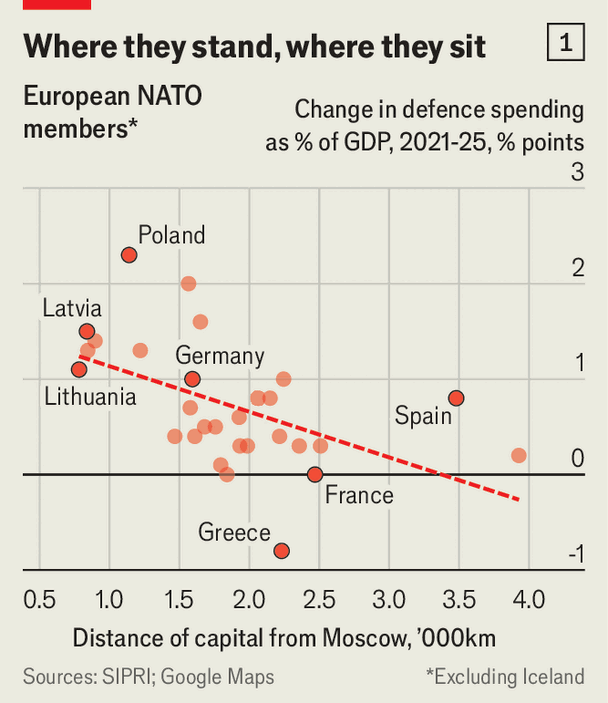

Europe has promised cash for defence. It’s failing to provide it
Most Europeans want stronger armed forces, but are unwilling to pay for them
July 9th 2026

A UKRAINIAN FLAG inscribed in Cyrillic with the words “Thanks, always” hangs at a factory in northern Sweden, where slabs of steel are transformed into hundreds of armoured vehicles each year. The flag was presented by Ukraine’s 21st Brigade, which operates the CV90 infantry fighting vehicle made here. Its soldiers affectionately call it “the Scandinavian beast”. The flag is a daily reminder to employees of how they are contributing to the security of Europe. “It is good to see that we have helped people,” says Julia, who works on an assembly line.
A decade ago the Hagglunds factory, owned by BAE Systems, Britain’s biggest defence firm, was cutting costs to survive. Today it is expanding its capacity five- or six-fold to fulfil soaring orders. Revenue has surged from $211m in 2018 to $1.1bn in 2025, and is heading “north of $2bn” a year, says Tommy Gustafsson-Rask, the general manager. The workforce has more than tripled since 2021, to around 2,600.
Prosperity in Ornskoldsvik is one side of Europe’s rearmament boom, as the continent rushes to meet a year-old NATO agreement to raise defence spending to 3.5% of GDP (plus another 1.5% on security infrastructure) by 2035. Much of this money will go towards new equipment, from missiles to drones, tanks and warships. European NATO members must rebuild their armed forces to counter a potential Russian attack, possibly without American support. For countries with substantial defence industries, this investment will create economic growth.
The other side of the rearmament spree, however, showed up at a recent demonstration in Brussels, where thousands marched under the banner “welfare, not warfare”. Last year in Italy trade unions put some 500,000 people on the street in protest against higher defence spending. If Europe wants more capable armed forces, it faces a trade-off. It will need more public borrowing, higher taxes, cuts to social spending or a mix of all three.
Yet a close look at the finances of Europe’s biggest military powers shows that many, including Britain and France, are on a trajectory that is unlikely to reach the 3.5% target. Donald Trump and his secretary for war, Pete Hegseth, see NATO’s European members as freeloaders mooching off America’s security guarantees while giving their citizens generous benefits and long holidays. On July 3rd Mr Trump posted a chart on social media showing American defence spending towering above that of several NATO members, and commenting: “Ridiculous for the U.S.A. to continue along this one sided path.”

The 3.5% spending goal was intended to keep Mr Trump on board. To understand why many European countries may fail to live up to the promise, it helps to sort them into three groups: the good, the sad and the smugly indifferent.
Countries that have reached the target or are on track to do so soon are mainly those that feel most threatened by Russia, such as the Baltics and Poland (see chart 1). This often involves hard choices. Lithuania is introducing a new “security contribution” tax. Finland is slashing spending on health care. In total, 11 European countries are financing at least half of their increase in defence spending by raising taxes or cutting spending, reckons Fitch, a rating agency.

This is generally easier in front-line countries, where most people support cutting social spending to fund defence, according to polling by the European Council on Foreign Relations, a think-tank (see chart 2). Other countries on the “good” list have plenty of room to borrow, such as Denmark, Sweden and above all Germany, which aims to hit 3.7% by 2030. Their low public debt allows politicians to duck choices between guns and butter, for now.
Countries in the “sad” group aim to reach the target, but have little room to borrow and low support for higher taxes or welfare cuts. Alas, this includes both Europe’s nuclear powers, Britain and France. Britain is in such tight straits that last month the defence secretary, John Healey, resigned over the miserly planned increase to his budget. Further wrangling produced a small increase of 0.1% of GDP by 2030, for a total of 2.7%. Analysts doubt Britain will hit 3.5% by 2035. France is even further behind. It plans to raise defence spending to just 2.5% of GDP by 2030. Even this will require “significant trade-offs” in higher taxes or budget cuts in other areas, according to France’s Court of Auditors.
Then there are the smugly indifferent. Spain managed to get itself exempted, saying it would cap spending at 2.1% of GDP. Others, such as Portugal, solemnly swear they will reach the target but have made almost no effort to do so. Italy came up with its own creative solution, reporting a 39% increase to hit 2% of GDP last year. But the actual increase in spending was just 7%; the rest was accounting chicanery.
Countries that fail to hit 3% by 2030 will have an even bigger hill to climb by 2035. Many may delay until the last few years, as when NATO set a guideline of 2% at a summit in 2014, warns Fenella McGerty of the International Institute for Strategic Studies, a British think-tank. The resulting “hockey-stick” jump in spending made allies bid against each other for limited kit, driving up prices and waiting times.
The politics is difficult. Many countries have both left-wing populists who oppose defence spending for social reasons, and right-wing populists who do not see Russia as a threat. The fiscal side will be hard, too: countries that borrow for defence budgets, such as Germany, will struggle to sustain them as interest payments and the costs of their ageing populations rise.
The problem is not just that countries may miss the targets, but that they also use the money poorly. Spending too much on their own industries leads to fragmentation. Europe operates 12 sorts of tanks and makes five different howitzers, compared with one of each in America. Then there are the boondoggles. Last month Germany cancelled a €10bn ($11.4bn) shipbuilding programme because it was running late and costs had ballooned. Taxpayers have reason to be furious, having blown €2.3bn on frigates the navy will never get.
Instead of simply looking at spending, countries should consider what that money is buying, and whether it is providing the capabilities (such as armoured brigades) that they pledged to NATO. Secrecy surrounds many of these targets, for good reason, but lifting the veil a bit would increase accountability. The most intense budget fights are still to come. Governments will be better able to make the case for defence if they can show they are putting the money to good use. ■
Stay on top of our defence and international security coverage with The War Room, our weekly subscriber-only newsletter.